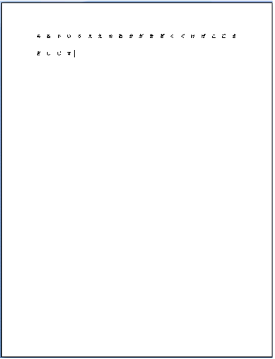
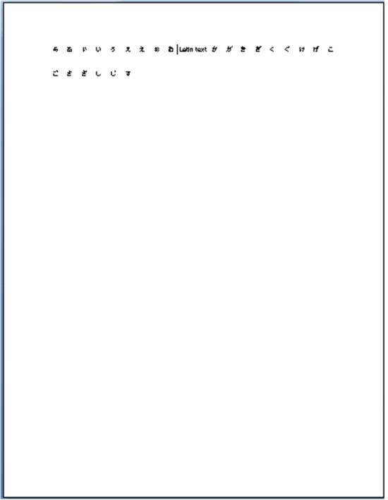

This element specifies the settings for the document grid, which enables precise layout of full-width East Asian language characters within a document by specifying the desired number of characters per line and lines per page for all East Asian text content in this section.
[Example: Consider a document with the document grid defined to allow 20 characters per line, and 20 lines per page by snapping characters to the grid (type attribute of snapToChars) as follows:

As shown, this document allows for only 20 East Asian characters per line by adjusting the inter-character spacing to ensure that there are only 20 characters per line. end example]
If Latin text is interspersed on this line, then it is placed across the number of grid units needed to fit the content, but all other grid positions are unaffected.
[Example: Consider the example above with the addition of the text "Latin text" in English, as follows:

The Latin text spans two grid units, so it is placed in the center of those two units; no other grid positions are affected, so the text on the second line now spans two additional grid units. end example]
|
Parent Elements |
|
Attributes |
Description |
|
charSpace (Document Grid Character Pitch) |
Specifies the number of characters to be allowed on the document grid for each line in this section.
This attribute's value shall be specified by multiplying the difference between the desired character pitch and the character pitch for that character in the font size of the Normal font by 4096.
This value shall then be used to add the character pitch for the specified point size to each character in the section [Note: This results in text in the Normal style having a specific number of characters per line. end note]
[Example: Consider a section with a Normal font size of 11 points on which a 21 point pitch document grid has been defined.. The resulting WordprocessingML would be defined as follows:
<w:docGrid w:charSize="40960" …/>
The charSpace attribute specifies a value of 40960, which means that the delta between the character pitch of each character in the grid and the Normal font is 10 points, resulting in a character pitch of 11+10 = 21 points for all characters in this section. end example]
Individual runs of text can override the line pitch information specified for the document grid by specifying that the run text shall not snap to the document grid via the snapToGrid element (§2.3.2.32).
The possible values for this attribute are defined by the ST_DecimalNumber simple type (§2.18.16). |
|
linePitch (Document Grid Line Pitch) |
Specifies the number of lines to be allowed on the document grid for the current page assuming all lines have equal line pitch applied to them. This line pitch shall not be added to any line which appears within a table cell unless the adjustLineHeightInTable element (§2.15.3.1) is present in the document's compatibility settings.
This attribute is specified in twentieths of a point, and defines the pitch for each line of text on this page such that the desired number of single spaced lines of text fits on the current page.
[Example: Consider a standard 8.5x11" page on which a 20 character wide, 20 line document grid has been defined. The resulting WordprocessingML would be defined as follows:
<w:docGrid w:linePitch="684" …/>
The linePitch attribute specifies that 34.2 points is to the amount of pitch allowed for each line on this page in order to maintain the specific document grid. end example]
Individual paragraphs can override the line pitch information specified for the document grid by either: • Specifying an exact line spacing value using the lineRule attribute of value exact on the spacing element (§2.3.1.33). • Specifying that the paragraph text shall not snap to the document grid via the snapToGrid element (§2.3.1.32).
The possible values for this attribute are defined by the ST_DecimalNumber simple type (§2.18.16). |
|
type (Document Grid Type) |
Specifies the type of the current document grid, which defines the grid behavior.
The grid can define a grid which snaps all East Asian characters to grid positions, but leaves Latin text with its default spacing; a grid which adds the specified character pitch to each character on each row; or a grid which affects only the line pitch for the current section.
[Example: Consider the document discussed above with the document grid defined to allow 20 characters per line, and 20 lines per page by snapping characters to the grid as follows:
This document has a type attribute of snapToChars, which specifies that the grid shall force East Asian characters to fit 20 to a line. end example]
The possible values for this attribute are defined by the ST_DocGrid simple type (§2.18.18). |

The following XML Schema fragment defines the contents of this element:
<complexType name="CT_DocGrid">
<attribute name="type" type="ST_DocGrid"/>
<attribute name="linePitch" type="ST_DecimalNumber"/>
<attribute name="charSpace" type="ST_DecimalNumber"/>
</complexType>